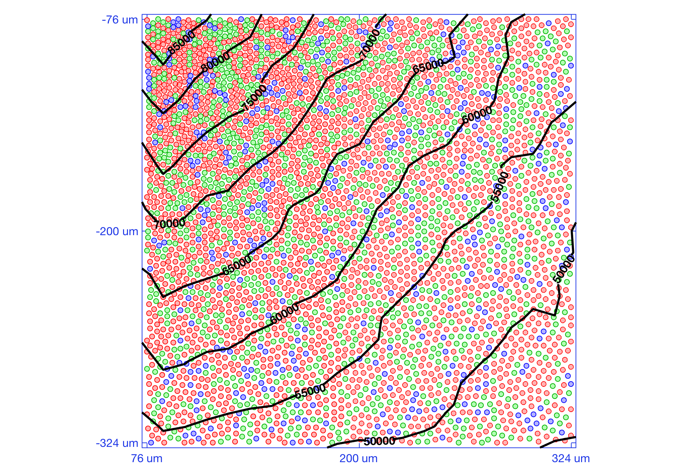
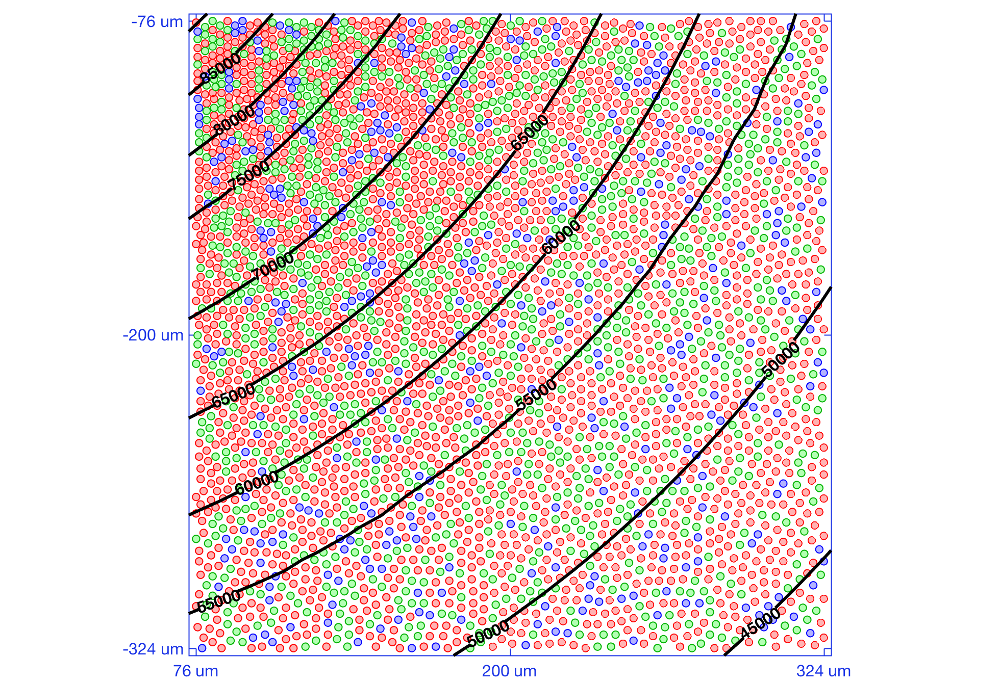
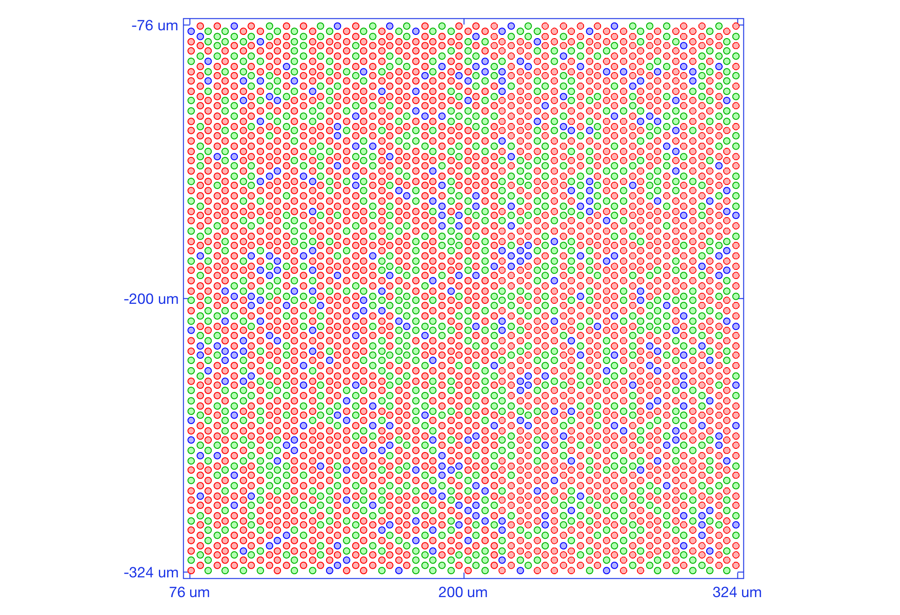
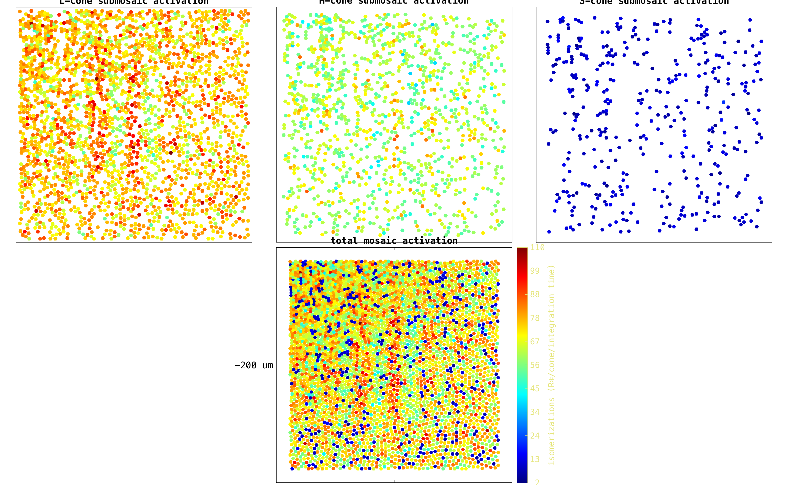
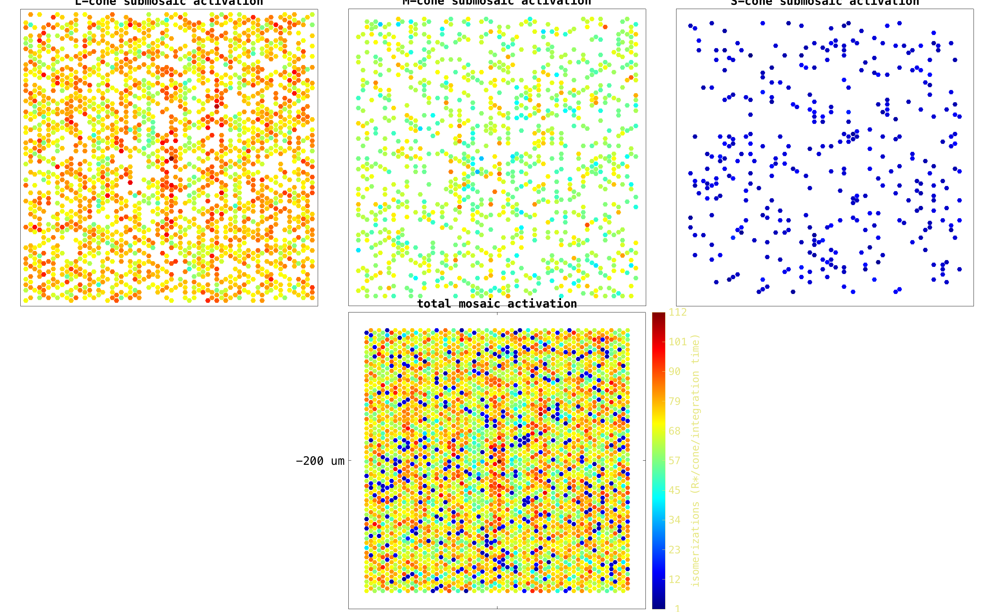
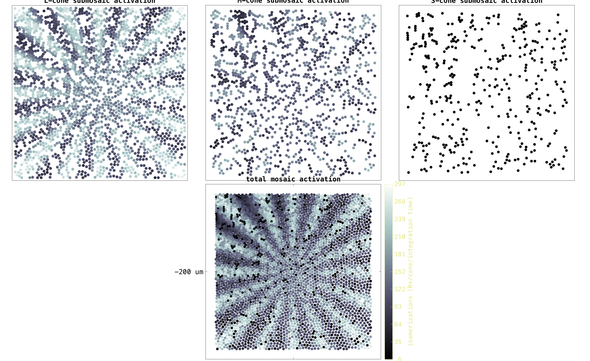
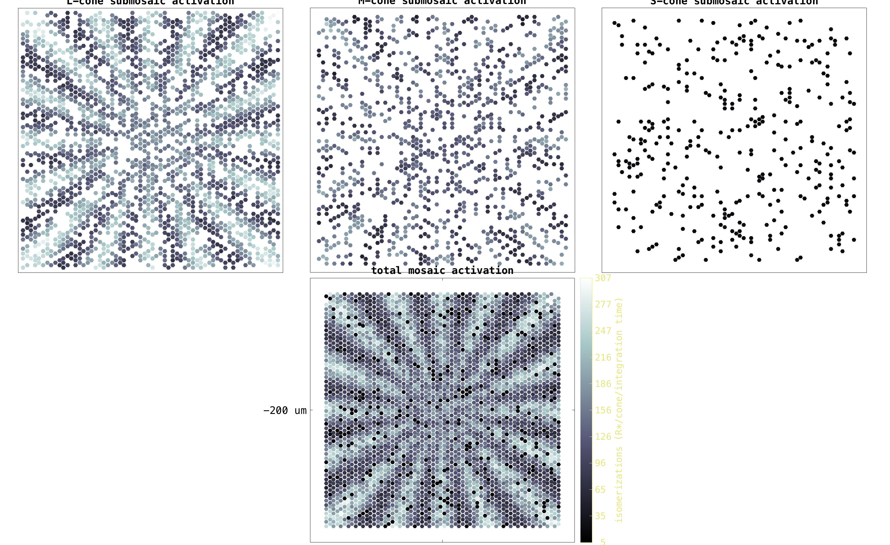

t_coneMosaicHex5
Shows how to generate hexagonal mosaic with spatially-varying cone density.
NPC ISETBIO Team, Copyright 2016
Contents
- Initialize
- Unit test 1: generate a hex mosaic with spatially-varying cone density positioned at (0.5mm, 0.0mm)
- Unit test 2: generate a hex mosaic with spatially-uniform cone density positioned
- Unit test 3: compute and display activation maps to a Gabor stimulus
- Unit test 4: compute and display activation maps to the Rays stimulus
Initialize
ieInit; clear; close all; % Interactive mode. Set to true to have it pause at useful places. % Default is false so we can autopublish without user input interactiveMode = false; % Freeze random number generator rng('default'); rng(219347);
Unit test 1: generate a hex mosaic with spatially-varying cone density positioned at (0.5mm, 0.0mm)
Mosaic Parameters
mosaicParams = struct(... 'resamplingFactor', 7, ... % controls the accuracy of the hex mosaic grid 'spatiallyVaryingConeDensity', true, ... % whether to have an eccentricity based, spatially - varying density 'customLambda', [], ... % custom spacing? 'centerInMM', [0.2 -0.2], ... % 0.2 mm horizontal, 0.1 vertical 'size', [60 60] ... % generate from a rectangular mosaic of 60x60 cones ); if (interactiveMode) commandwindow fprintf('\n<strong>Hit enter to create a hex mosaic with spatially-varying cone density positioned at x = %2.2f mm, y = %2.2fmm. </strong>', mosaicParams.centerInMM(1), mosaicParams.centerInMM(2)); pause end % Generate the hex grid theHexMosaic1 = coneMosaicHex(... mosaicParams.resamplingFactor, ... mosaicParams.spatiallyVaryingConeDensity, ... mosaicParams.customLambda, ... 'center', mosaicParams.centerInMM*1e-3, .... 'size', mosaicParams.size ... ); % Print some grid info and visualize it theHexMosaic1.displayInfo(); theHexMosaic1.visualizeGrid(... 'overlayConeDensityContour', 'measured', ... % choose between 'measured', 'theoretical', 'none' 'coneDensityContourLevelStep', 5000, ... % draw contours every 5000 cones/mm2 'generateNewFigure', true... ); theHexMosaic1.visualizeGrid(... 'overlayConeDensityContour', 'theoretical', ... % choose between 'measured', 'theoretical', 'none' 'coneDensityContourLevelStep', 5000, ... % draw contours every 5000 cones/mm2 'generateNewFigure', true... );
Iteration: 0
Iteration: 50
Iteration: 100
Done with iterative adjustment in 11.9 seconds
Resampling grid. Please wait ... Done !
Mosaic info:
Size (microns): 248.4 (w) x 248.4 (h)
FOV (deg): 0.84 (w) x 0.84 (h)
Grid resampling factor: 7
Cone geometric aperture (diameter in microns): 4.14 (w) x 4.14 (h)
Cone light colleting aperture (diameter in microns): 2.90 (w) x 2.90 (h)
Cone geometric area (microns^2): 17.142
Cone light colleting area (microns^2): 8.399
Rectangular grid: 60 cols x 60 rows
Resampled grid: 420 cols x 420 rows
Total cones: 176400
Active cones: 3817
Cone density (all cones): 2858523.0 cones/mm^2
Cone density (active cones): 61853.6 cones/mm^2
  Unit test 2: generate a hex mosaic with spatially-uniform cone density positioned
if (interactiveMode) commandwindow fprintf('\n<strong>Hit enter to create a hex mosaic with spatially-uniform cone density positioned at x = %2.2f mm, y = %2.2f mm. </strong>', mosaicParams.centerInMM(1), mosaicParams.centerInMM(2)); pause end mosaicParams.eccentricityBasedConeDensity = false; theHexMosaic2 = coneMosaicHex(... mosaicParams.resamplingFactor, ... mosaicParams.eccentricityBasedConeDensity, ... mosaicParams.customLambda, ... 'center', mosaicParams.centerInMM*1e-3, .... 'size', mosaicParams.size ... ); % Print some grid info and visualize it theHexMosaic2.displayInfo(); theHexMosaic2.visualizeGrid(... 'generateNewFigure', true... );
Resampling grid. Please wait ... Done !
Mosaic info:
Size (microns): 248.4 (w) x 248.4 (h)
FOV (deg): 0.84 (w) x 0.84 (h)
Grid resampling factor: 7
Cone geometric aperture (diameter in microns): 4.14 (w) x 4.14 (h)
Cone light colleting aperture (diameter in microns): 2.90 (w) x 2.90 (h)
Cone geometric area (microns^2): 17.142
Cone light colleting area (microns^2): 8.399
Rectangular grid: 60 cols x 60 rows
Resampled grid: 420 cols x 420 rows
Total cones: 176400
Active cones: 3520
Cone density (all cones): 2858523.0 cones/mm^2
Cone density (active cones): 57040.8 cones/mm^2
 Unit test 3: compute and display activation maps to a Gabor stimulus
if (interactiveMode) commandwindow fprintf('\n<strong>Hit enter to compute and visualize isomerizations maps for the 2 mosaics for an achromatic Gabor scene. </strong>'); pause end % Load acrhomatic Gabor scene [dirName,~] = fileparts(which(mfilename())); load(fullfile(dirName,'GaborAchromScene.mat')) gaborScene = sceneSet(gaborScene,'fov', 1.0); % Compute the optical image oi = oiCreate; oi = oiCompute(gaborScene,oi); % Compute isomerizations for the different mosaics and display the results isomerizationsGabor1 = theHexMosaic1.compute(oi,'currentFlag',false); isomerizationsGabor2 = theHexMosaic2.compute(oi,'currentFlag',false); activationLUT = jet(1024); theHexMosaic1.visualizeActivationMaps(... isomerizationsGabor1, ... % the signal matrix 'mapType', 'modulated hexagons', ... % how to display cones: choose between 'density plot', 'modulated disks' and 'modulated hexagons' 'signalName', 'isomerizations (R*/cone/integration time)', ... % colormap title (signal name and units) 'colorMap', activationLUT, ... % colormap to use for displaying activation level 'figureSize', [1550 950] ... % figure size in pixels ); theHexMosaic2.visualizeActivationMaps(... isomerizationsGabor2, ... % the signal matrix 'mapType', 'modulated hexagons', ... % how to display cones: choose between 'density plot', 'modulated disks' and 'modulated hexagons' 'signalName', 'isomerizations (R*/cone/integration time)', ... % colormap title (signal name and units) 'colorMap', activationLUT, ... % colormap to use for displaying activation level 'figureSize', [1550 950] ... % figure size in pixels ); 
Unit test 4: compute and display activation maps to the Rays stimulus
if (interactiveMode) commandwindow fprintf('\n<strong>Hit enter to compute and visualize isomerizations maps for the 2 mosaics for the rays scene. </strong>'); pause end % Generate ring rays stimulus raysScene = sceneCreate('rings rays'); raysScene= sceneSet(raysScene,'fov', 1.0); % Compute the optical image oi = oiCreate; oi = oiCompute(raysScene,oi); % Compute isomerizations for the different mosaics and display the results isomerizationsRays1 = theHexMosaic1.compute(oi,'currentFlag',false); isomerizationsRays2 = theHexMosaic2.compute(oi,'currentFlag',false); activationLUT = bone(1024); theHexMosaic1.visualizeActivationMaps(... isomerizationsRays1, ... % the signal matrix 'mapType', 'modulated hexagons', ... % how to display cones: choose between 'density plot', 'modulated disks' and 'modulated hexagons' 'signalName', 'isomerizations (R*/cone/integration time)', ... % colormap title (signal name and units) 'colorMap', activationLUT, ... % colormap to use for displaying activation level 'figureSize', [1550 950] ... % figure size in pixels ); theHexMosaic2.visualizeActivationMaps(... isomerizationsRays2, ... % the signal matrix 'mapType', 'modulated hexagons', ... % how to display cones: choose between 'density plot', 'modulated disks' and 'modulated hexagons' 'signalName', 'isomerizations (R*/cone/integration time)', ... % colormap title (signal name and units) 'colorMap', activationLUT, ... % colormap to use for displaying activation level 'figureSize', [1550 950] ... % figure size in pixels ); 